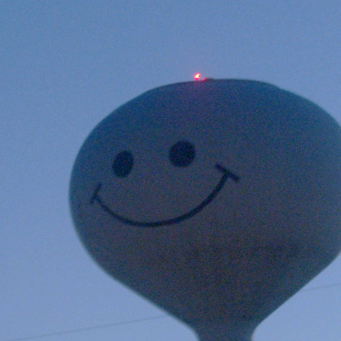

extremely online
a new wave of young, rebellious artists
about:
origin: late 2010s
similar genres associated with: digicore, glitch pop, nightcore, cloud rap, punk, noise pop, dariacore, emo
primary figures: 100 gecs (dylan brady, laura les, arguably the pioneers), dorian electra, food house (fraxiom, gupi), alice longyu gao, jane remover, underscores, recovery girl, early osquinn
history
album: 1000 gecs
artist: 100 gecs
released: november 15, 2019
sub-genres: digicore, emo rap, nightcore, electropop
descriptors: chaotic, noisy, humourous, rebellious, youthful, aggressive, loud, surreal, absurdist, bratty
recommended if you like: trolling people, bongs, monster trucks, rage rooms, taking names and kicking *ss, deep-fried memes, basement shows
thoughts: i honestly think this album has shifted the timeline. it unironically defined a whole generation, full of creativity and individual identity, breaking every rule possible and never caring about what works.
fav track: stupid horse
album: my agenda
artist: dorian electra
released: october 16, 2020
sub-genres: edm, hardcore, brostep, art pop, uh...
descriptors: satire, masculine, manic, chaotic, statement, sarcastic, hedonistic
recommended if you like: furries, bdsm, conspiracy theories, fedoras, those gangster cartoon shirts, the term "brOTP", mlg, raiding discord servers
thoughts: i love how it's the most extremely stereotypical male caricatures that are becoming more frequent and unironic. this tells a whole story, watching someone's joker moment, both hilarious and downright scary. still fresh and eye-opening to this day, i think dorian was trying to tell us something
fav track: barbie boy

album: fishmonger
artist: underscores
released: march 25, 2021
sub-genres: indie pop, pop rock, emo pop
descriptors: quirky, nostalgic, messy, noisy, summer, anxiety, childhood
recommended if you like: skateboarding anywhere that isn't a skate park, coming-of-age movies, diary of a whimpy kid, hand drawn tattoos, internet friends, hating growing up, existential dread
thoughts: the most youthful album out there, watching myself and a friend grow up, all throughout the course of a summer, maybe our last year in town. it's messy like any other teenager heading onto adulthood, and it doesn't help over the fact that i listened to this album throughout my whole summer leading up to my freshmen year in college.
fav track: kinko's field trip 2006
sound
themes
aesthetic
modern day influence
listen here!
sources + read more